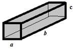

Задача 1.
Алуминиев детайл с маса m = 0,567 kg има форма на паралелепипед с размери a = 4,5 cm, b = 0,15 m, c = 40 mm (фиг. 1). Като използвате, че $\rho$ал = 2700 kg/m3 и g = 10 m/s2, определете: а) Еднороден ли е този детайл или в него има кухини? Ако има кухини, определете техния обем. (4 т)
 Фиг. 1
б) В какво положение трябва да се разположи детайла, така че да оказва най- малко налягане върху основата. Пресметнете това налягане. (3 т) в) Поставяме детайла на равнораменна везна и го уравновесяваме с желязна теглилка. Каква трябва да е масата на теглилката, ако плътността на желязото е $\rho$ж = 7800 kg/m3? (1 т) г) Потапяме детайла и теглилката в две еднакви вани с равни количества вода. Опишете как ще се промени нивото на водата в двете вани. (2 т)
Задача 2.
Електричният звънец (фиг. 2) е уред, с помощта на който става превръщане на електричната енергия в звукова. Ако веригата се затвори, през нея протича ток. Електромагнитът притегля желязната пръчка и чукчето удря звънеца. При това движение веригата се прекъсва, електромагнитът престава да действа и желязната пръчка се връща в първоначално положение. а) Къде във веригата е мястото за бутона, с който задействаме звънеца? (1 т) б) Какви заряди и в каква посока се движат по веригата? (2 т) в) Каква е ролята на еластичната метална пластинка във веригата? (1 т) г) Избройте силите, които действат между отделните части на затворената верига на електричния звънец. (6 т)
 Фиг. 2
Фиг. 2
Задача 3.
Влак, който се движи със скорост v1 = 72 km/h, преминава край стрелочник за t1 = 15 s. а) Колко е дълъг влака? От колко вагона е съставена влаковата композиция, ако дължината на един вагон е l1 = 20 m? (3 т) б) Мотоциклетист се движи със скорост v2 = 90 km/h в същата посока. За колко време той ще изпревари влака? (4 т) в) Втори мотоциклетист се движи със скорост v2* = 72 km/h в противоположна на влака посока. Колко време ще продължи разминаването? (3 т)